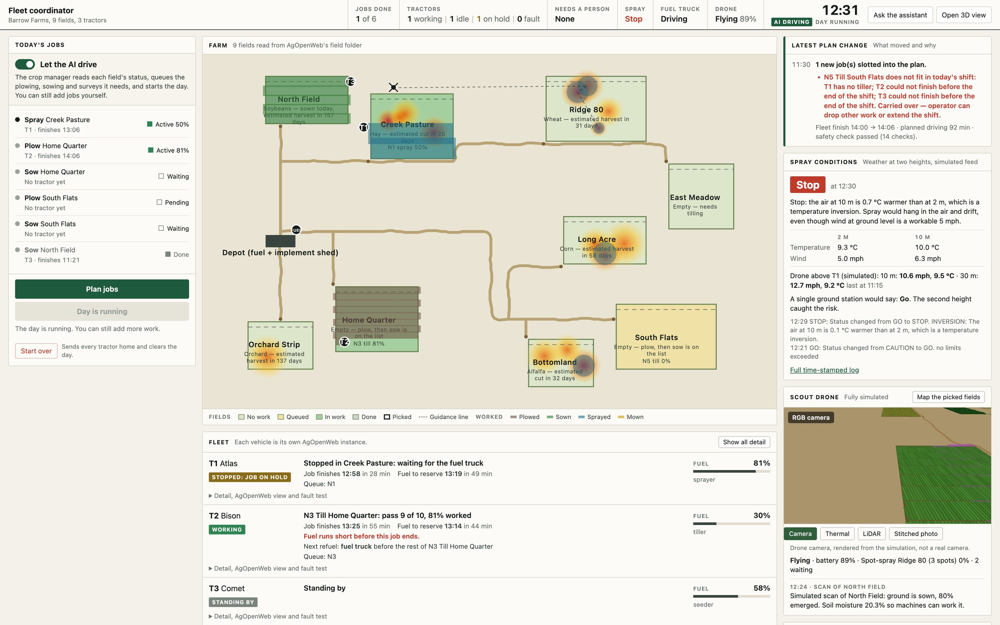
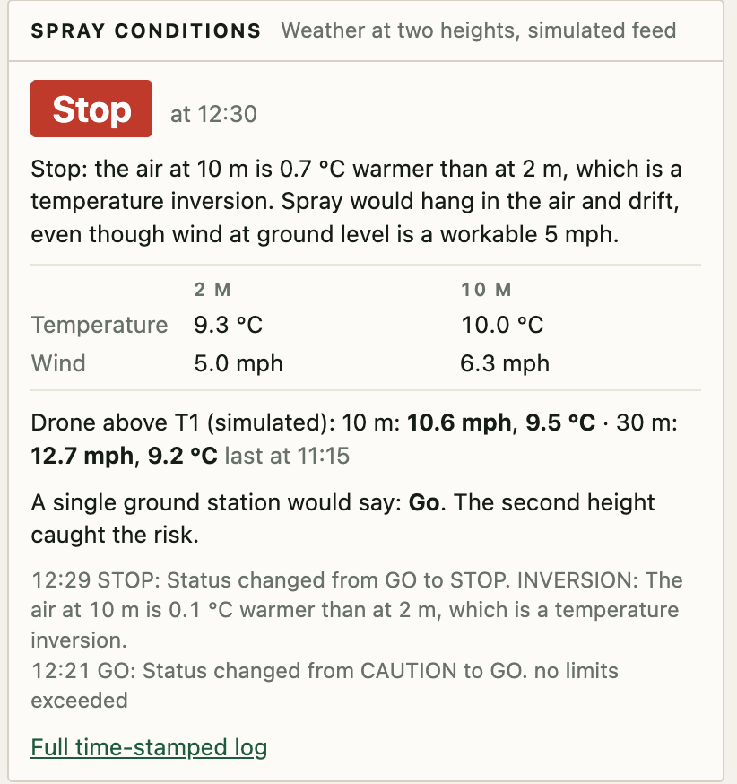

AGX HACKATHON · RUN THE FLEET + SPRAY OR WAIT
Fleet management that knows your farm, checks your fields, builds the day’s schedule, and keeps AI watching every factor while the work runs.
Team 5
github.com/misansz/agxhackathon
THE PROBLEM
The main sprayer stops mid-morning, and its jobs still have deadlines.
An inversion or a gust, and spray drifts off the field. A reading at ground level can miss it.
Rain is forecast, so a hay field jumps the queue. Urgent jobs arrive mid-day.
A first-come, first-served dispatcher ignores priority and deadlines, and it misses deadlines without warning anyone.
Farm Manaigment
THE MARKET
$12.8B → $21.2B
Precision farming market, 2025 to 2030, growing 10.6% a year.
$3.9B
Autonomous tractors in 2025, forecast to grow about 16% a year to 2034.
85K → 379K
H-2A farm worker positions certified, 2012 to 2024. Farms cannot find enough hands.
90%
of US leafy greens from November to March come from Yuma. Our demo farm sits in the Yuma Valley.
Every autonomous tractor needs something to coordinate it. That layer is what we built.
Sources: BCC Research · IMARC · Farm Bureau · University of Arizona
WHAT WE BUILT
A record per field: crop, planting date, ground state.
A scout drone surveys fields; telemetry 4× a second.
Right tractor, tool and fuel; re-plans in milliseconds.
AI managers follow faults, weather, fuel and deadlines.

The status page, captured from a live run on four AgOpenWeb vehicles
THE BRIEF
Takes an operator’s job list
Assigns compatible tractors: implement, fuel, deadline
Shows progress on a live map and dashboard
Recovers from a breakdown: no conflicts, no lost work
Explains every plan change in plain language
Blocked routes and changed priorities
Plans around fuel: a 10% reserve and a fuel truck
Beats first come, first served on travel and idle time
“Why?” on every assignment
Connected to AgOpenWeb: four real instances
Live demo next: we break a tractor mid-job and you watch it recover.
Hand-in: code, README, scenario, event log and baseline comparison are in the repo
TRACK 1 · SPRAY OR WAIT
While a tractor sprays, the drone flies above it and reads the wind at 10 m, 30 m and 50 m.
Air at 2 m and 10 m, every plan minute: inversion, wind and shear. The answer is Go, Caution or Stop, with the reason and the numbers.
A Stop holds every spray job where it stands, and releases it when the air recovers.
Here a ground station alone would say Go. The second height caught the inversion.

Source: agopen/weather.js · agopen/drone.js · weather feed and drone are simulated
THE AI TEAM
Every manager reads the same record of the farm and writes only its own part. Every change goes to one log file.
On every event the managers speak at a roundtable you can read on the dashboard.
The chair can change a priority, approve a late finish or defer a job. No manager can release a tractor: a person presses Good to go.
Fault Manager
Real fault, or a recovery?
Fleet Manager
Who is free, low on fuel, wrongly fitted
Route Manager
Field coverage and lane routes
Safety Officer
Objects when tractors get close
Depot Manager
People’s work at the depot
Weather Manager
Is spraying allowed, and why
Plan Manager
The chair: decides what happens to the plan
Source: agopen/roundtable · agents/